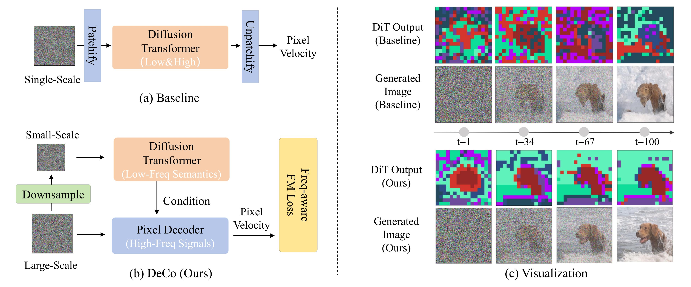
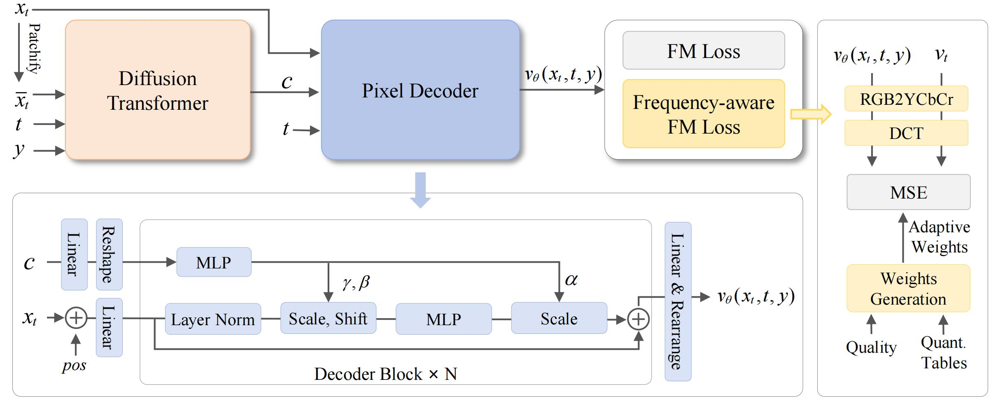
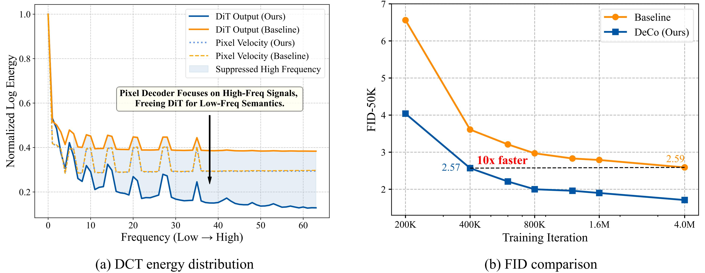

Pixel diffusion aims to generate images directly in pixel space in an end-to-end fashion. This approach avoids the limitations of VAE in the two-stage latent diffusion, enabling more optimal distribution learning and eliminates artifacts from imperfect VAE compression.
However, it is challenging for pixel diffusion to jointly model complex high-frequency signals and low-frequency semantics within the high-dimensional pixel space. As illustrated in Fig.2 (a), traditional methods typically rely on a single diffusion transformer (DiT) to learn these two components from a single-scale input for each timestep. The complex high-frequency signals, particularly high-frequency noise, could be hard to learn. They could also distract the DiT from learning low-frequency semantics. As illustrated in Fig.2 (c), this paradigm leads to noisy DiT outputs and degraded image quality.
We thus propose DeCo to decouple the generation of high and low frequency components.

Figure 2: Illustration of our frequency-decoupled (DeCo) framework. In (a), traditional baseline models rely on a single DiT to jointly model both low-frequency semantics and high-frequency signals. (b) shows our DeCo framework, where a lightweight pixel decoder focuses on the high-frequency reconstruction, and the DiT models low-frequency semantics. As shown in (c), decoupling DiT from modeling high-frequency signals leads to better low-frequency semantic features in DiT Output, and higher image quality.
As illustrated in Fig.2 (b), DeCo utilizes the DiT to specialize in low-frequency semantic modeling with downsampled inputs. Semantic cues are hence incorporated with a lightweight pixel decoder to reconstruct high-frequency signals. In other words, the pixel decoder takes the low-frequency semantics from DiT as condition and predicts pixel velocities with a high-resolution input. In our DeCo, a lightweight pixel decoder is proposed to model high-frequency signals, freeing the DiT to specialize in low-frequency semantic modeling To further emphasize visually salient frequencies and suppress perceptually insignificant high-frequency components, we introduce a frequency-aware Flow-Matching (FM) loss inspired by the JPEG. The detaild implementation is depicted in Fig.3.

Figure 3: Overview of the proposed frequency-decoupled (DeCo) framework. The DiT operates on downsampled inputs to model low-frequency semantics, while the lightweight pixel decoder generates high-frequency details under the DiT's semantic guidance.
DCT spectral analysis in Fig. 4 (a) confirms that DeCo effectively shifts high-frequency components from the DiT to the pixel decoder, significantly reducing high-frequency energy in DiT outputs while maintaining strong high-frequency signals in the pixel velocity. This successful decoupling firstly benefits from the multi-scale input strategy, which allows the DiT to focus on low-frequency semantics from low-resolution inputs while the pixel decoder handles high-frequency details from high-resolution inputs. Furthermore, the AdaLN-based interaction proves to be a superior mechanism for modulating the pixel decoder with stable semantic conditions from the DiT, acting more effectively than simple methods like upsampling and addition.

Figure 4: (a) DCT energy distribution of DiT outputs and predicted pixel velocities. Compared with baseline, DeCo suppresses high-frequency signals in DiT outputs while preserving strong high-frequency energy in pixel velocity, confirming effective frequency decoupling. The distribution is computed on 10K images across all diffusion steps using DCT transform with 8x8 block size. (b) FID comparison between our DeCo and baseline. DeCo reaches 2.57 FID in 400k iterations, 10× faster than the baseline.